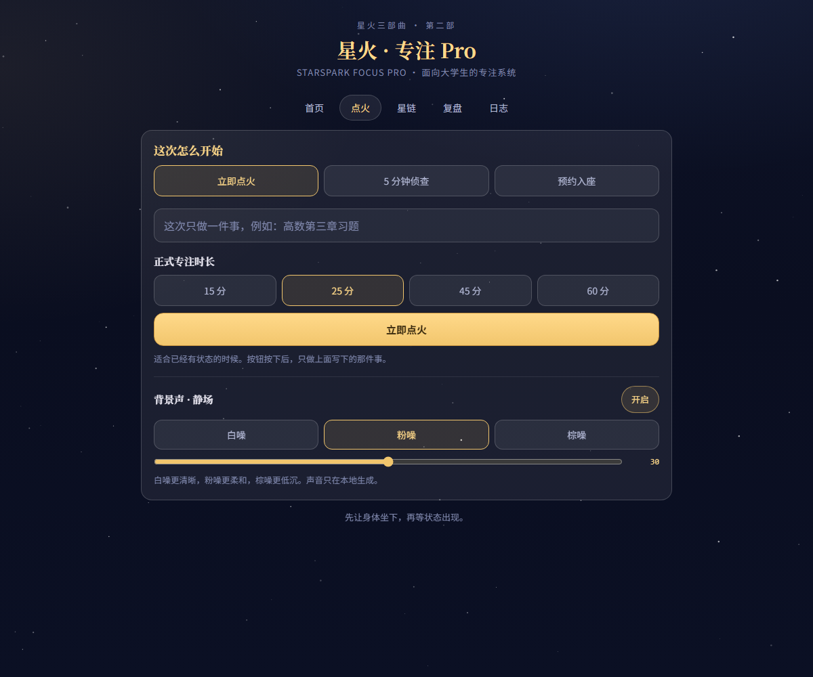
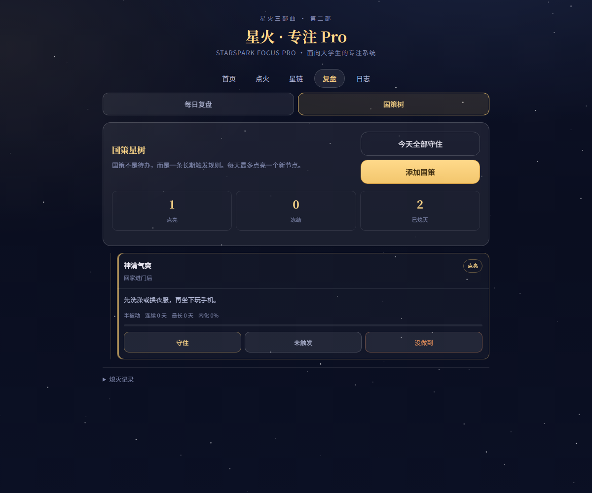

静场 · 本地背景声
白噪、粉噪、棕噪全部由浏览器合成，不联网、不录音。声音随专注开始和结束淡入淡出，并记住上次的音量与类型。
愿我如星君如月，夜夜流光相皎洁。
面向大学生的专注力定制系统。它把「开始」拆成三种协议，用浏览器本地生成的静场遮蔽环境；完成专注后铸成星链，合理中断可以立为判例。国策树进一步把目光从一小时拉向长期生活：每天最多点亮一个新规则，没做到时熄灭分支或用“水密隔舱”短暂冻结。所有数据留在本机，不需要服务器。

白噪、粉噪、棕噪全部由浏览器合成，不联网、不录音。声音随专注开始和结束淡入淡出，并记住上次的音量与类型。

每天最多新增一条触发式规则；守住会积累内化进度，没做到则递归熄灭或进入冻结。5 分钟侦查、正式专注和复盘可以自动完成对应国策。
从「怎样开始」到「怎样继续」，每个环节都减少一次决策负担。
立即开始、5 分钟侦查或预约入座，先跨过启动阻力。
时间戳防漂移；早停时断链或立为永久判例，不用“下不为例”。
从专注小时走向长期生活条件，用小型规则逐步改变默认状态。
延续第一部的「火花」概念，锁定「大学生专注力」方向，视觉定为月夜星火、诗月点缀。
设计理念与公式摆上首页；点火动画、预约倒计时、准确计时与 idea/thinking 复盘加入核心闭环。
新增近 90 天星图、完整/提前收束/判例状态区分、JSON 合并导入导出；星河链路取代旧卫星动效。
新增立即点火、5 分钟侦查、预约入座三种启动方式；预约错过需主动判定；启动协议统计与永久判例簿上线。
所有可见名称统一为「星火专注 Pro」；新增白噪、粉噪、棕噪三种本地合成背景声。
新增模板与自定义国策、每日结算、内化进度、递归熄灭、水密隔舱和专注自动判定。